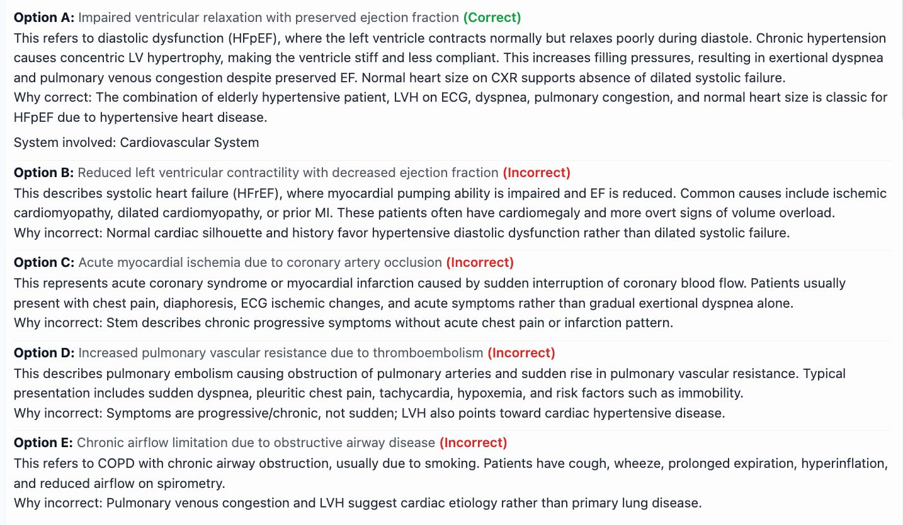
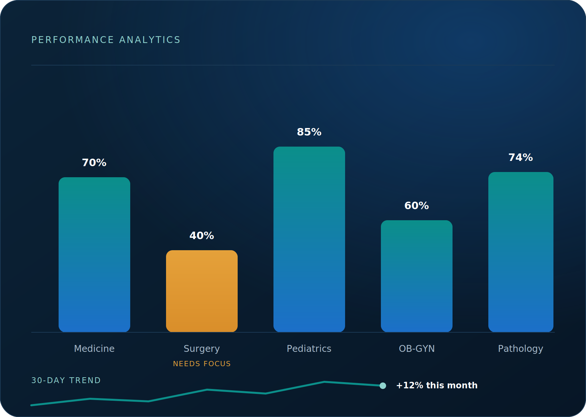

Inside The Question Bank
What to Expect from Your MDMS/ JCAT Question Bank
The MDMS/ JCAT QBank is built around the entrance exam's real scoring pattern, so you're not left decoding the format on test day — your time goes toward sharpening the reasoning it actually rewards.
Sit the real format, early and often
Timing and layout in every block mirror the actual MDMS/ JCAT screen, so by exam day the format itself is no longer a surprise — you'll have already run through it many times over.


Turn scores into a study plan
Each attempt updates a subject-wise breakdown, so rather than re-reading the whole syllabus before the exam, you can direct the time you have left to exactly where it's needed most.
Explanations that show the reasoning, not just the answer
Each rationale explains what makes the correct option right and why the other choices fall short, with labeled diagrams worked in wherever an image gets the point across quicker than text.

Built Into Every Question
One QBank, fully equipped
Nothing sits behind a separate upgrade — every MDMS/ JCAT question arrives with the full toolset from the moment you start.
Custom Practice Blocks
Set the subject, topic, or difficulty level yourself, so each session closes a specific gap instead of covering ground you've already mastered.
Save Favorites for Revision
Flag the questions that give you trouble and come back to just that shortlist later, instead of working back through the entire bank before test day.
Timed Mocks & Free Practice
Run a full timed mock when you want the real-exam pressure, or drop into untimed practice while a concept is still coming together.
Trustworthy Rationales
Every explanation is verified against standard entrance-exam references, so nothing you commit to memory falls apart under closer scrutiny later.
Mapped to the Entrance Syllabus
Coverage is verified topic-by-topic against the current MDMS/ JCAT syllabus, so nothing on exam day is coming at you completely cold.
Refreshed Every Cycle
Content is reviewed and updated on every cycle, so the bank stays aligned with how the exam is actually being written now.
By The Numbers
0
Scenario questions mapped to the actual MDMS entrance syllabus
No filler and no recycled easy patterns — just enough depth and difficulty that the real exam feels like one more block you've already sat through.
Getting Started
How it works
From sign-up to exam-day readiness.

-
01
Set up your profile
Enter your exam date and current starting point, so the plan built around you has a clear countdown to work toward.
-
02
Work through the QBank
Answer scenario-based questions written at real exam difficulty, choosing timed blocks or your own pace as you go.
-
03
Study every rationale
Look past whether you got it right and understand why each wrong option was a wrong option too.
-
04
Let the data steer you
Check your subject-wise breakdown often and let it, not a hunch, decide what you study next.
From Candidates
What MDMS/ JCAT candidates say
Rated 4.8/5 by over 900 MDMS/ JCAT candidates for how realistic and clear the explanations are.
The scenario-heavy style lined up perfectly with the real MDMS/ JCAT paper — I walked in already knowing what to expect.
Seeing my subject-wise breakdown let me spend my last two weeks on exactly the right topics.
The diagrams inside the explanations made concepts that used to confuse me click almost instantly.
Start Preparing
MDMS/ JCAT question bank
Reasoning-first prep, shaped around the entrance exam itself.
MDMS/ JCAT FAQ
Common questions
Over 3,000 scenario-based questions mapped to the current entrance syllabus, pitched at or above the difficulty level candidates describe seeing on the actual paper.
Both banks share the same explanation-first approach, but this one is built around MDMS/ JCAT's entrance format and syllabus, while FCPS-1 is aimed at postgraduate clinical reasoning.
Yes — on top of custom practice blocks, you can start a full-length timed mock any time you want to simulate real exam conditions.
Yes. Tap "View sample questions" above to work through a short set of MDMS/ JCAT questions with no account needed.